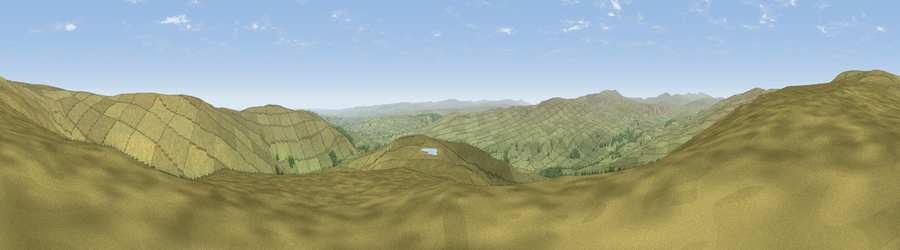

Viewpoint near Newbiggin
#8139 in England · top 16% of its area beats it · near NewbigginThe view, rendered

A 360° render of this exact spot computed from the terrain model, tree cover and land cover — summer colours, afternoon light, calibrated against photographs of famous viewpoints. Real trees, hedges and buildings will differ in detail.
The panorama
Grey silhouette: terrain skyline in each direction (720 bearings, Earth curvature and refraction included). Dashed green: skyline with trees (+15 m) and buildings (+8 m) as obstacles. Blue strip: how far the ground is visible on each bearing.
Where the view opens
Wedge length = distance to the farthest visible ground on that bearing (vegetation-aware). Rings at 10, 25 and 50 km.
What fills the view
97% grassland · 2% woodland
Angular shares of the visible panorama (visual magnitude), not map area. Landscape diversity 0.06 (0–1 Shannon).
Key numbers
More beautiful places nearby
The staircase of upgrades: each row has a higher view potential than everything closer. Driving times are estimates from straight-line distance, calibrated against real road routing — check an actual route before setting out.
| Place | Direction | Drive | Score |
|---|---|---|---|
| Viewpoint near Newbiggin | NNW · 2 km | ~5 min | 69.4 |
| Viewpoint near Middleton-in-Teesdale | ESE · 4 km | ~8 min | 70.5 |
| Viewpoint c10501_7697 | WSW · 9 km | ~18 min | 70.9 |
| Viewpoint near Eggleston | SE · 10 km | ~20 min | 76.0 |
| Great Dun Fell | W · 22 km | ~37 min | 77.8 |
| Little Dun Fell | W · 23 km | ~37 min | 78.4 |
| Cross Fell | W · 25 km | ~40 min | 78.7 |
| Viewpoint near Plumpton | W · 42 km | ~62 min | 78.9 |
54.66525, -2.11120 · source: screening · position refined by local search. Computed location — check access rights before visiting.